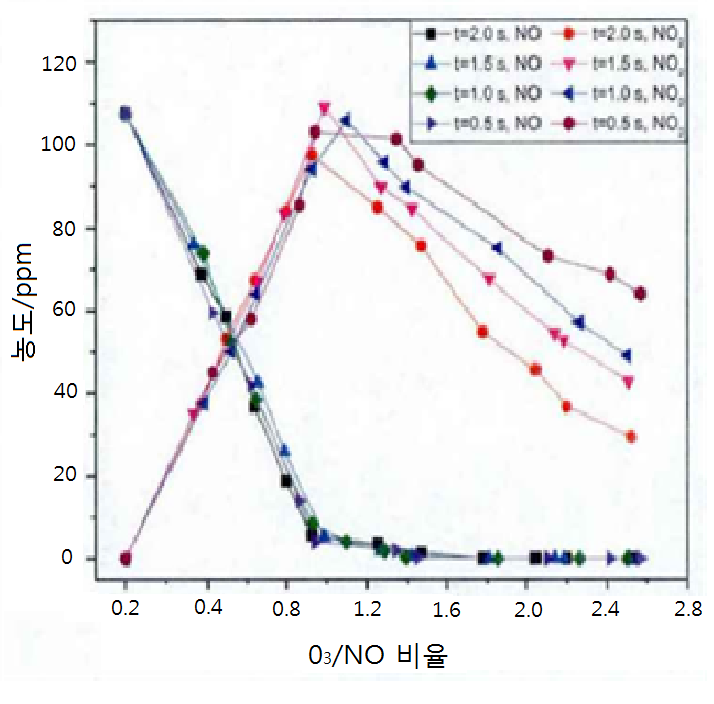

꿈과 사랑으로 성장하는 경인교육

가정통신문
2015 도란도란공부방 2차 문화체험활동 안내
제15 -168 호
담당자: 김정희
전 화: 2612-3471
www.kyeongin.ms.kr
학부모님 댁내 평안하십니까?
다름이 아니오라 본교에서 운영하고 있는 도란도란 공부방에서는 2학기 중간고사 마지막날에 다음과 같이 문화체험을 하고자 하오니 참가를 희망하시는 학부모님께서는 아래 동의서를 보내 주시기 바랍니다.
< 2015 도란도란공부방 2차 문화체험 활동 안내 >
◆ 일시 및 장소 : 2015년 9월 24일(목) 12:00~ 16:30, AK백화점
◆ 대상 : 공부방 참여학생 중 희망학생
◆ 일정 및 활동내용
12:00 ~ 12:30 – 학교출발, AK백화점 도착
12:30 ~ 16:00 – 점심식사 , 영화 관람
16:00 ~ 16:30 – 귀가지도
◆ 인솔교사 : 김정희, 박옥희, 강희숙, 양경선
◆ 줍비물 : 왕복 교통비
(입장료 및 식비는 학교지원)
◆ 활동 내용 및 장소는 사정에 따라 변경될 수 있습니다.
불법찬조금 및 촌지와 관련한 고발 및 상담 창구
‣ 남부교육지원청 운영지원감사팀 ☏ 02-2165-2132 ‣ cleanedu@sen.go.kr(이메일)
‣ 서울특별시홈페이지(http://www.sen.go.kr)-전자민원-신고센터-불법찬조금 )
‣ 경인중학교 행동강령책임관 교감 김정연 ☏ 02-2682-0291
경인중학교장